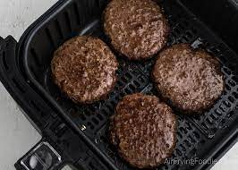

Air fryer Burgers

Description
Easy burgers made in 20 minutes using an air fryer. French fries or kettle chips make a good side with this recipe.
Ingredients
- 1lb ground beef
- hamburger seasoning
- sliced cheese
- hamburger buns
- condiments and toppings of your choice
Steps
- preheat air fryer to 375 degrees
- handform 1lb of ground beef into four 1/4lb patties
- season both sides with hamburger seasoning
- place patties inside preheated air fryer
- cook for a total of 20 minutes, flipping patties after 10 minutes
- place cheese on patties during last minute of baking
- let sit for 5 minutes
- place patties on buns, add condiments and serve